Estudiante de Ingeniería en Desarrollo y Gestión de Software
Soy estudiante de Ingeniería en Desarrollo y Gestión de Software en la Universidad Tecnológica del Centro de Veracruz (UTCV). Me especializo en el desarrollo de software web, móvil y la gestión de proyectos con metodologías ágiles (Scrum, DevOps y XP). Mi enfoque es crear soluciones tecnológicas escalables, innovadoras y centradas en el usuario, con experiencia en proyectos académicos y colaborativos que involucran Ionic, Angular, Spring Boot, MySQL y MongoDB.
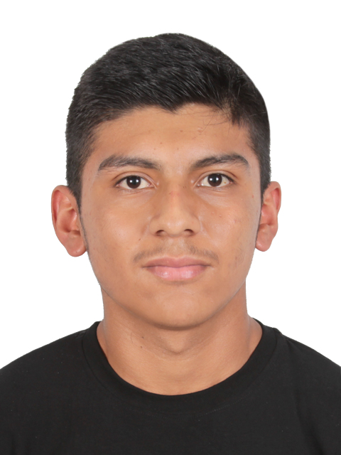
Conjunto integral de habilidades técnicas y competencias blandas desarrolladas a través de proyectos académicos y experiencia práctica
Proyectos desarrollados que demuestran aplicación práctica de conocimientos técnicos y impacto en problemáticas reales
Analista de Datos y Documentador Técnico
Plataforma web innovadora para la predicción de brotes de dengue mediante modelos avanzados de inteligencia artificial. El sistema permite anticipar riesgos epidemiológicos y proporciona herramientas para la toma de decisiones informadas en políticas de salud pública, contribuyendo significativamente a la prevención y control de enfermedades vectoriales.
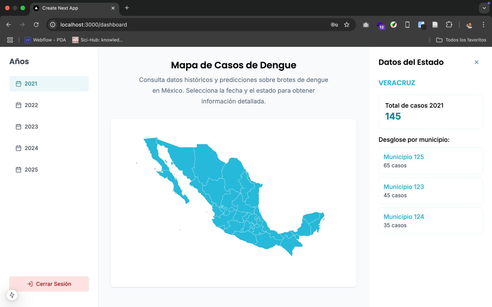
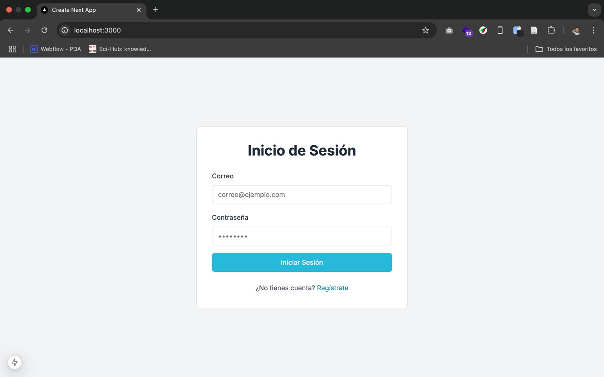
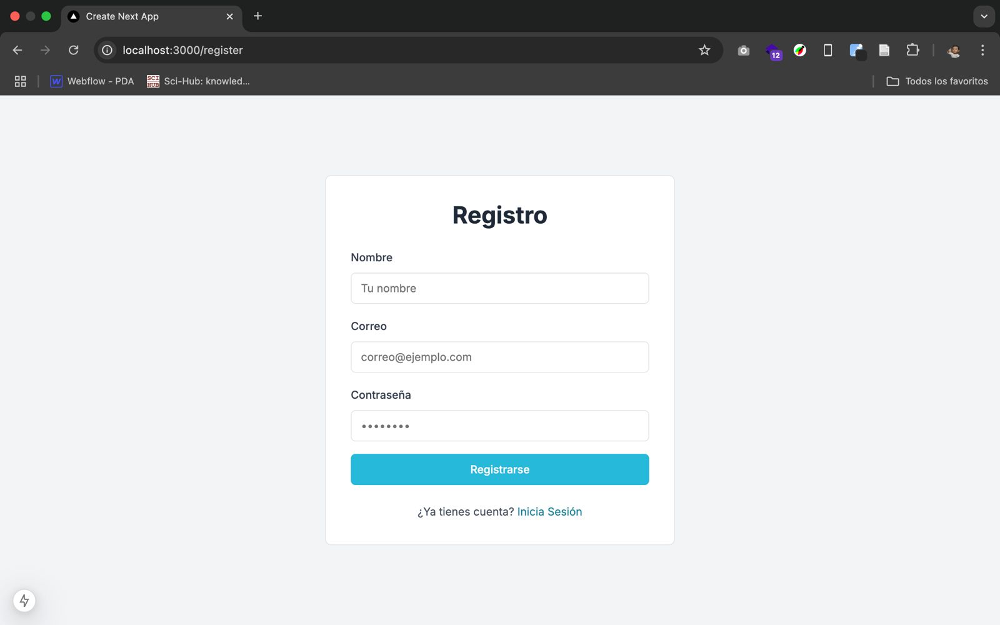
Desarrollador principal: diseño de arquitectura, backend e integración de notificaciones
Plataforma móvil para la gestión de avalúos inmobiliarios. Incluye registro de clientes, generación de solicitudes, administración de peritos y notificaciones en tiempo real. Además, integra un panel administrativo para el control de usuarios y el seguimiento de proyectos, mejorando la comunicación entre administradores, secretarias y peritos.
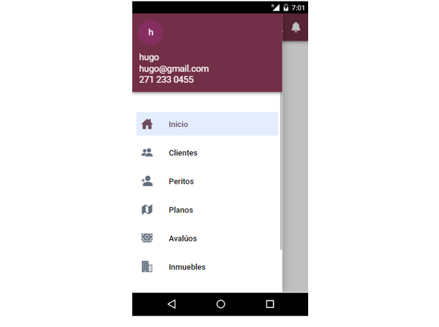
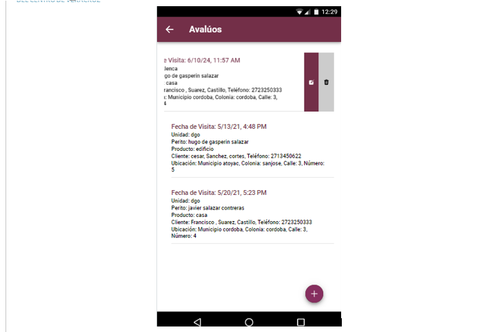
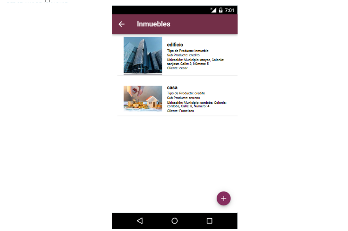
Desarrollador web: diseño de interfaz, backend y base de datos
Aplicación web empresarial desarrollada para Café Pale,
una empresa dedicada a la producción y comercialización de café.
La plataforma permite la gestión integral de ventas, clientes, empleados,
proveedores y productos, optimizando las operaciones internas y mejorando
la experiencia de compra de los clientes.
El sistema cuenta con módulos de registro, consultas, actualización y
eliminación de información, además de funcionalidades para la toma de
decisiones administrativas y control de inventarios en tiempo real.
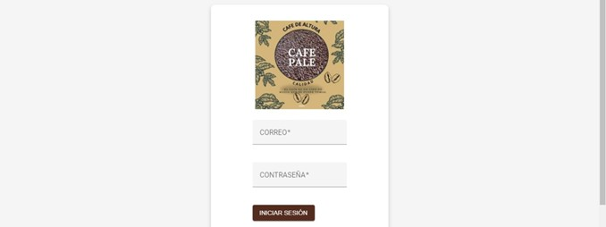
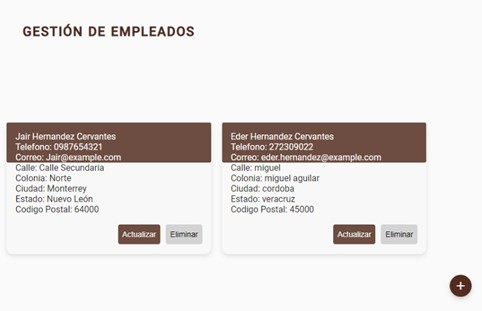
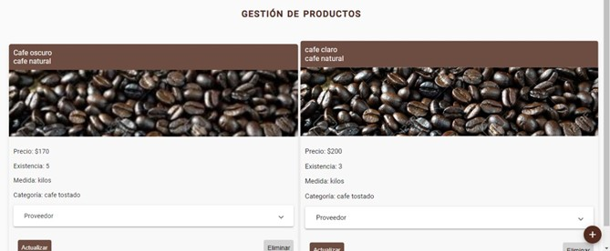
Desarrollador móvil: análisis de requerimientos, diseño e implementación
Aplicación móvil multiplataforma para Café Pale que permite gestionar el catálogo de productos, pedidos y la experiencia de compra del cliente. Incluye registro/inicio de sesión, carrito, notificaciones y módulos informativos (perfil, ayuda, categorías y más). Orientada a mejorar ventas, operación y presencia digital de la empresa.
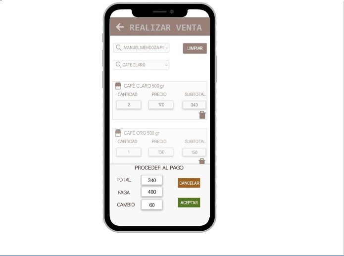
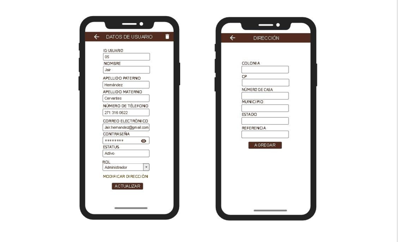
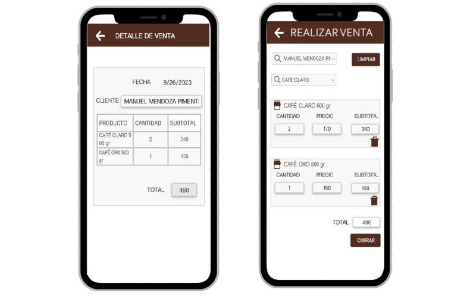
Disponible para colaboraciones, oportunidades profesionales y consultoría técnica
Córdoba, Veracruz, México